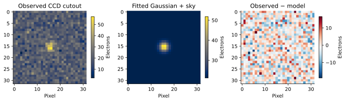
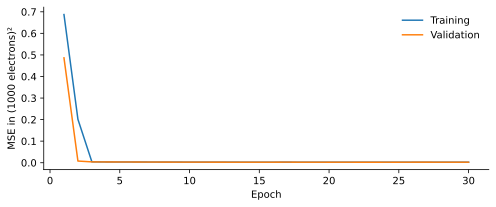
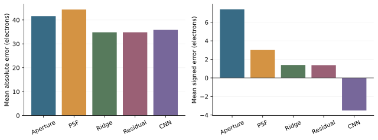
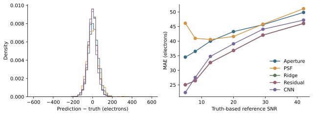
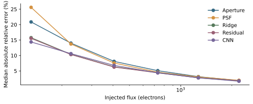
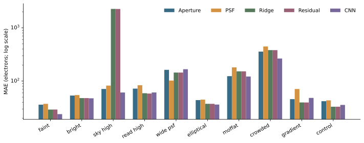

A comparative investigation of classical photometric estimators and machine-learning methods under noisy astronomical observations.
Research notebook · 16 October 2026 · Synthetic observations · Not an official Distill publication
How much can a learned estimator improve a measurement already guided by the physics of image formation? We simulate 10,000 independent 32 × 32 stellar cutouts, reserve 2,000 for testing, and compare aperture photometry, Gaussian PSF fitting, feature-based Ridge regression, a residual correction, and a compact convolutional network. The new run is evaluated separately from an earlier, user-reported experiment. On the new held-out set, Ridge achieves the lowest MAE of 34.84 electrons; Gaussian PSF fitting achieves 44.36 and the CNN 35.84 electrons. Ten controlled synthetic conditions examine how noise, profile mismatch, and neighbouring light change the comparison. These results measure performance within a deliberately restricted simulator; they do not establish accuracy on telescope observations.
A faint star does not arrive as a clean brightness value. Its light spreads across pixels, the sky adds counts, and the detector introduces noise. Photometry estimates the integrated stellar signal from this mixture. The central question is whether learning from simulated examples improves that estimate, and whether any advantage survives a change in observing conditions.
Classical methods carry useful assumptions: an aperture collects nearby light, while a PSF fit describes how the light should be distributed. A machine-learning model can use patterns in images or combine classical measurements, but it can also learn properties of its training distribution that fail elsewhere. This study treats both possibilities as legitimate outcomes.
The point-spread function, or PSF, describes how an unresolved star is spread across the detector. In the simulator, its pixel weights sum to one. Multiplying those weights by flux gives the expected source electrons in each pixel.
Here

The baseline source flux is log-uniform from 100 to 3,000 electrons. Circular Gaussian widths are uniform from 1.1 to 1.5 pixels (FWHM approximately 2.59–3.53 pixels), with independently sampled subpixel centres in the central pixel region. Sky contributes 20 electrons per pixel and read noise has a standard deviation of 3 electrons.
Each PSF is evaluated at four subpixel positions per pixel, then normalised across the stamp. This quadrature approximates pixel integration; it is not an exact optical detector model. Independent random streams generate 7,000 training, 1,000 validation and 2,000 test fields. No latent field is deliberately reused across these splits.
The additional conditions vary flux, sky, read noise, width, ellipticity, Moffat shape, crowding, and a linear sky gradient. Each condition contains 200 newly generated fields. Estimators receive the image alone: injected flux, true width and truth-based SNR are reserved for evaluation.
A positive, sky-subtracted centroid is estimated within four pixels of the expected source location. A circular aperture of radius four pixels is then summed. The sky median and standard deviation are measured in an annulus from nine to thirteen pixels around the stamp centre. Aperture correction uses the enclosed fraction of a nominal Gaussian with width 1.3 pixels; it does not use the true simulated width.
Pixels are selected by centre inclusion. Photutils provides an independent check of this integration convention
A bounded least-squares fit estimates integrated flux, centroid, circular width and constant background within seven pixels of the stamp centre. The PSF has unit sum: its fitted coefficient is integrated flux, not peak intensity. Residuals use one local background-noise scale, rather than a full heteroscedastic Poisson likelihood. Optimisation failures are flagged and retain the documented fallback estimate; no failed object is silently removed.
Ridge uses aperture and PSF flux, estimated sky, sky standard deviation, fitted width, centroid offsets, fit residual mean square, and aperture uncertainty. Standardisation is fitted on training data only. Regularisation is selected from 0.1, 1, 10 and 100 using validation MAE
The residual model learns the signed correction above. Because PSF flux is also an input to both linear models, direct Ridge and residual Ridge have closely related hypothesis classes; their difference is principally regularisation, not evidence that one is a fundamentally more expressive architecture. A feature ablation keeps aperture flux, sky, sky standard deviation and aperture uncertainty, removing all PSF-derived features and centroid offsets.
The CNN has two 3 × 3 convolutions (8 and 16 channels), ReLU activations, two average-pooling operations and a 32-unit dense regression head. Each image has its edge median subtracted and is divided by 100; targets are divided by 1,000. Neither operation fits parameters on the test set. Training uses Adam at 0.001 with batches of 128 and MSE loss

Every estimator predicts the same 2,000 test object IDs. MAE describes typical absolute error, RMSE gives more weight to large mistakes, and signed bias detects systematic over- or underestimation. Relative errors divide by strictly positive injected flux.
Percentile intervals use 1,000 resamples of the test objects. Comparisons with PSF fitting use the same resampled indices for both methods. These intervals measure finite-test-sample variation conditional on this trained model, not uncertainty across retraining seeds.
These values were computed from the saved predictions in this package. They are not recalculations of the earlier local experiment.
| Method | MAE (e−) | RMSE (e−) | Bias (e−) | Median relative error |
|---|---|---|---|---|
| Aperture | 41.62 | 52.84 | +7.40 | 5.68% |
| PSF | 44.36 | 57.94 | +3.01 | 5.66% |
| CNN | 35.84 | 46.41 | -3.51 | 4.95% |
| Ridge | 34.84 | 44.73 | +1.39 | 4.66% |
| Residual | 34.84 | 44.74 | +1.38 | 4.67% |
| Ablation | 38.19 | 48.59 | +0.98 | 5.07% |

Ridge has the lowest average absolute error in this run. The CNN's signed bias is -3.51 electrons, compared with +3.01 electrons for PSF fitting. A positive sign means overestimation.
| Method | 95% MAE interval | 95% paired MAE difference vs PSF |
|---|---|---|
| Aperture | 40.31–43.02 | -4.55 to -0.84 |
| PSF | 42.80–45.92 | +0.00 to +0.00 |
| CNN | 34.48–37.05 | -10.20 to -6.71 |
| Ridge | 33.62–36.01 | -10.85 to -8.00 |
| Residual | 33.61–36.01 | -10.85 to -8.00 |
| Ablation | 36.87–39.53 | -7.77 to -4.41 |

SNR is a truth-based diagnostic, approximated by

All trained models are frozen before these stress tests. Flux is fixed at 150 or 2,000 electrons in the faint and bright conditions; high sky is 100 electrons/pixel; high read noise is 10 electrons RMS; the wide PSF has sigma 2.2 pixels; the elliptical axis ratio is 0.65 at 0.6 radians. The Moffat profile has beta 3 and matched major-axis FWHM. The contaminating star has 70% of the target flux and is displaced by (4, 1) pixels. The gradient is 0.5 electrons per pixel step. Unchanged parameters retain the baseline distribution.

| Condition | Lowest MAE method | MAE (e−) |
|---|---|---|
| faint | CNN | 23.97 |
| bright | CNN | 47.52 |
| sky high | CNN | 61.05 |
| read high | Residual | 58.32 |
| wide psf | PSF | 102.31 |
| elliptical | CNN | 36.21 |
| moffat | CNN | 121.87 |
| crowded | CNN | 265.04 |
| gradient | Residual | 39.65 |
| control | Ridge | 33.02 |
The strongest failure is high sky: Ridge MAE rises to 2,265.53 electrons, compared with 61.05 for the CNN and 71.15 for aperture photometry. Training used a single sky level, so this is an extrapolation test, not an in-distribution benchmark. With a wide PSF, Gaussian fitting achieves the lowest MAE of 102.31 electrons. Under crowding, even the lowest observed MAE is 265.04 electrons (CNN): ranking first does not imply an accurate measurement.
Removing the PSF-related features and centroid offsets changes Ridge MAE from 34.84 to 38.19 electrons on the held-out baseline set. This is a grouped ablation, not an attribution of importance to each removed feature.
The earlier project reported the following comparison: aperture MAE 61.13, RMSE 79.64, bias 2.71 electrons; Gaussian PSF 54.63, 72.44, 3.78; Ridge 85.90, 109.60, 3.65; CNN 76.059, 99.253, 13.345, with CNN median relative error 5.620%. Its original images, split IDs, predictions and checkpoint were not supplied. These numbers are preserved as user-reported, unverified history and are not pooled with the new benchmark.
In the historical comparison, Gaussian PSF fitting had the lowest reported MAE. A plausible reason is its alignment with Gaussian synthetic image formation, but the missing original files prevent testing that explanation. The new study offers a separate test of estimators under explicit assumptions.
The new baseline ranks Ridge first by MAE, with the CNN at 35.84 electrons. Differences from the historical ordering cannot be attributed to a specific cause without the original data; these are separate experiments. A learned model can combine complementary estimators or shrink noisy estimates towards a training-set prior. That can reduce average error while introducing bias for particular flux ranges. Under PSF mismatch or crowding, both the fitted model and the learned distribution can be wrong. The condition tests expose that sensitivity; they do not isolate a unique causal mechanism.
This is a single-seed synthetic benchmark with a restricted brightness distribution and modest CNN training budget. The baseline training set contains isolated circular Gaussian sources. The source position is approximately known, so this is forced photometry rather than blind detection. There are no cosmic rays, saturation, bad pixels, flat-field errors, correlated read noise, realistic optical PSFs or telescope calibration uncertainties.
Finite-stamp normalisation conserves source counts in the image but does not estimate an infinite-aperture Moffat flux. The circular fitter does not deblend neighbouring sources. The aperture error estimate is approximate, and parameter-bound hits are not separately classified. Additional seeds, richer PSFs, joint deblending and calibrated predictive uncertainties are needed before practical claims.
No real astronomical observations were used. Synthetic-to-real transfer remains uncompleted. It requires suitable calibrated observations and independent reference photometry, with matching passbands and flux conventions.
On 2,000 held-out synthetic stars, the lowest observed MAE is 34.84 electrons (Ridge). The historical experiment separately favoured Gaussian PSF fitting. The additional synthetic conditions show how the comparison changes when the training assumptions are perturbed. The scientific deliverable is a reproducible comparison, including outcomes unfavourable to machine learning. Improvements within this simulator should be treated as conditional evidence, not a general replacement for physical photometric modelling.
The accompanying project archive contains the code, images, metadata, trained models, predictions, bootstrap intervals, scenario outputs and figures. The experiment manifest records units, seeds and SHA-256 fingerprints. No GitHub repository has been published for this new package; a repository link is therefore intentionally not claimed.
python3.12 -m venv .venv source .venv/bin/activate python -m pip install -r requirements.txt python -m research.run python -m pytest -q python scripts/build_article.py
Computed metrics (JSON) · Test predictions (CSV) · Condition comparison (CSV) · Experiment manifest
This optional illustration is not a research benchmark. A fixed pseudorandom seed drives exact Poisson sampling and Gaussian read noise. Changing the controls creates a new illustrative observation. Unlike the research estimator, this demonstration uses known sky and known PSF correction.
The fitted profile and residual image above come from a real saved synthetic test observation. The comparison charts and metric table are exported research outputs, not browser-generated benchmarks.
This profile uses the same saved test star as Figure 1. Select a detector row to compare observed electrons, fitted electrons and residuals.
Choose a method to calculate metrics for the first ten actual test objects. This small subset explains the arithmetic; it is not the full benchmark.
This article uses the genuine open-source Distill template.v2 distribution, with its native article grid, typography, mathematics, citations and footnotes. Only local math-asset URLs are patched. It is independently authored and is not published, reviewed or endorsed by Distill.